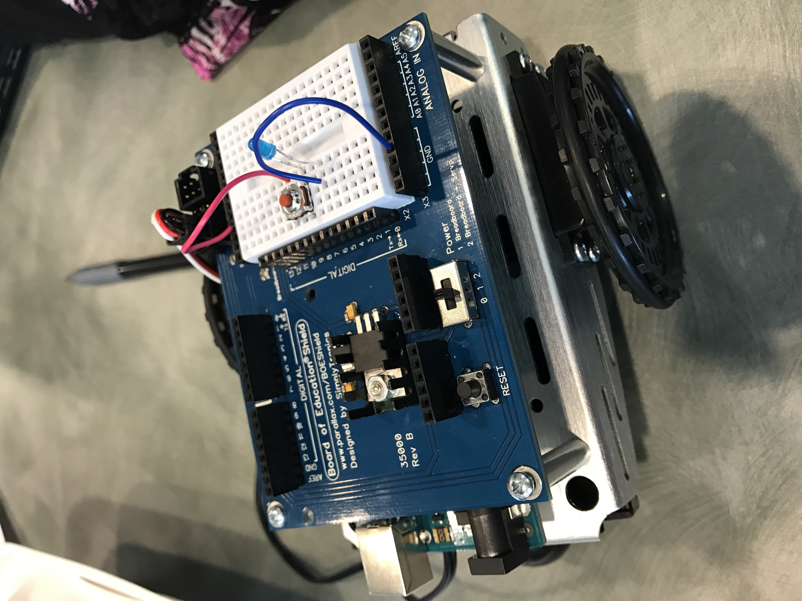

Kaitlyn Lee

Short Biography:
Hi! My name is Kaitlyn and I am going to be a junior at Saratoga High School. I love to watch movies and travel. My favorite color is blue and I love dogs.
Likes and Dislikes:
I like to do diving and go shopping with my friends. I also like watching Netflix, listening to music, and hanging out with friends. Some things that I dislike are reading and doing the chores.
Fun Fact:
A fun fact about me is that I used to be a competitive gymnast.
Side Scroller Game:

I created this game using Scratch. The goal of the game is to not touch the ghost. Every time you jump over the ghost youn earn a point. You also get bonus points if you jump up and touch the banana.
Some similarities between Python and Scratch are that they both have loops and conditionals.Some differences are that in Scratch, the "code" is already prewritten whereas in Python, you have to create the "Scratch blocks" on your own by writing your own program.
Learning how to write my own Python program was a bit confusing for me. At first, I didn't really understand the for loops, range, and if statements, but by the end of class I got a better understanding of these topics. I liked how we had more freedom to write our own programs. In Scratch, the blocks were already premade/written for us so we could only make the sprite do certain actions. In Python, we can code/program things to do whatever we want it to. However, I thought that learning the proper notations for Python were hard because things like capitalization, quotations, etc. affect the performance of your code.
A list is a sequence of numbers or strings. They can be changed whereas tuples cannot. They are useful because they can hold a lot of information and when necessary, the values/strings can be changed. I thought I worked well together with Anna. We shared our ideas and when one person ran into a problem, the other helped figure out the answer. I liked Python a lot because I thought it was pretty fun and not too hard to learn. It made sense to me and I liked how you could create almost anything in Python. The only thing I didn't really like about it was the syntax.
My idea of robotics changed a lot today. I realized that a lot things are robots such as specific vaccuum cleaners, self-driving cars, etc. I am really excited to see what the future holds in terms of robotics because people are making so many new advances and discoveries everyday. It's crazy to think that in maybe five or ten years, people will be sitting in self-driving cars and surgery will be done using robots for utmost precision. One thing that makes me nervous is the depiction of technology in some movies where robots become so smart that they actually begin to take over the world. A good thing about working in groups for the circuit was tht one person didn't understand how to do it another person pitched in and showed her how to do it herself. Next time, we could all have a chance at doing each circuit because today, some people got to do the parallel and others did the series. We were running out of time so not everyone had a chance to do it themselves.
